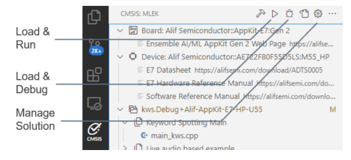
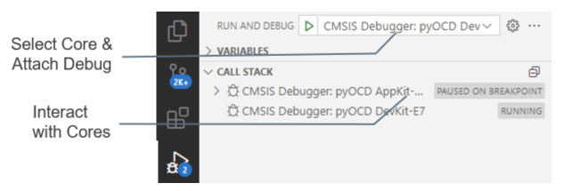
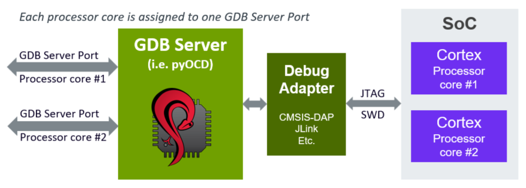
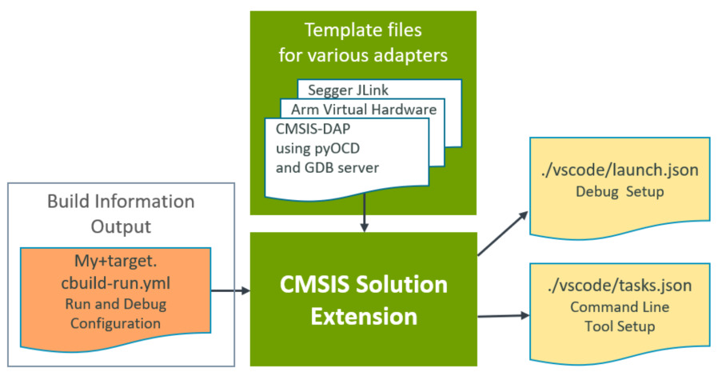

Configure Run and Debug
When using the CMSIS-Toolbox 2.9, the Run and Debug Management file *.cbuild-run.yml provides all information to configure programmers or debuggers.
With this information the CMSIS Solution extension generates the launch.json and tasks.json configuration files for the
run and debug features of VS Code.
Note
The generation of the launch.json and tasks.json files is enabled when the csolution project contains a target-set: node. Using target-set: uses the cbuild command option --active to select the configuration. The option --context-set and the file *.cbuild-set.yml is no longer used.
In VS Code, there are two debug request modes that can be configured in launch.json:
- Launch starts a debug session and typically stops at the main function.
- Attach connects a debug session to a running system.
CMSIS View - Action buttons

The CMSIS View offers these action buttons:
- Load & Run a csolution application which downloads and starts the application images in the target.
- Load & Debug a csolution application which downloads the application images and starts the debugger.
- Manage Solution configures the debug setup with the
target-set:node. It also supports multiple configurations using aset:name.
The action button:
- Load & Run executes from
tasks.jsonthe commandCMSIS Load+Run. - Load & Debug executes from
launch.jsonthe first section with"request": "launch"andcmsis:. If this is not present it uses fromtasks.jsonthe commandCMSIS Load+Debug.
Further commands are available under ...:
- Load executes from
tasks.jsonthe commandCMSIS Load. - Erase executes from
tasks.jsonthe commandCMSIS Erase. - Run executes from
tasks.jsonthe commandCMSIS Run.
Run and Debug - Request
The Run and Debug View in VS Code connects to the target using the request selection shown below.

The CMSIS Solution extension handles multiple processor cores using one debug connection for each core.

Example
The following *.csolution.yml file is configured for a CMSIS-DAP Debugger as shown below. Refer to the CMSIS-Toolbox users guide for details on target-set.
solution:
:
target-types:
- type: MyBoard_ROM # My evaluation kit (Execution from ROM)
board: B-U585I-IOT02A # Board name as defined by the pack
target-set:
- set: # default configuration
debugger:
name: CMSIS-DAP # uses CMSIS-DAP
The related *.cbuild-run.yml file contains the information for the debugger setup. The CMSIS Solution extension uses this information with a template file for a debug adapter (in this case for CMSIS-DAP) to update the configuration information in launch.json and tasks.json.

ToDo: add the generated launch.json + tasks.json from this example
User Modifications to launch.json
By default, the CMSIS Solution extension updates the launch.json file to reflect the settings in the csolution project. Sometimes the user needs control over settings. The cmsis: - updateConfiguration: value in the launch.json file controls the update. Remove auto to manually control the settings and this section.
"cmsis": {
"pname": cm33_core0
"target-type": MCXN947
"updateConfiguration": auto // without auto, this section is not modified
Template Files
Template files for various debug adapters are included in the installation. For reference the template files are provided in the Debug Adapter Registry.
A template file in *.json format contains the following sections:
"launch": // section for launch.json
"singlecore-launch": // debugger launch request for single-core system
"singlecore-attach": // debugger attach request for single-core system
"multicore-start-launch": // debugger launch request for the start processor in multi-core system.
"multicore-start-attach": // debugger attach request for the start processor in multi-core system.
"multicore-other": // debugger attach request for other processors in multi-core system.
"tasks": // section for tasks.json
"label": "CMSIS Load+Run", // command "CMSIS Load+Run"
"label": "CMSIS Run", // command "CMSIS Run"
"label": "CMSIS Load", // command "CMSIS Load"
"label": "CMSIS Erase", // command "CMSIS Erase"
The template files are processed with the Eta template engine. It inserts data of the *.cbuild-run.yml file into the various sections of the template file using placeholders listed in the table below. Each section is processed depending on the system type.
| Placeholder | Description |
|---|---|
solution_folder |
Relative path from the workspace folder to the directory that stores the *.csolution.yml file |
device_name |
From *.cbuild-run.yml: value of device: |
target_type |
From *.cbuild-run.yml: value of target-type: |
start_pname |
From *.cbuild-run.yml: value of start_pname: |
image_files |
From *.cbuild-run.yml: value list of output: with image information |
symbol_files |
From *.cbuild-run.yml: value list of output: with symbols information |
pname |
Processor name in a multi-core system that is currently processed by the template engine |
ports |
From *.cbuild-run.yml: value list of gdbserver: |
The usage of these placeholders is exemplified with the template files in the Debug Adapter Registry.